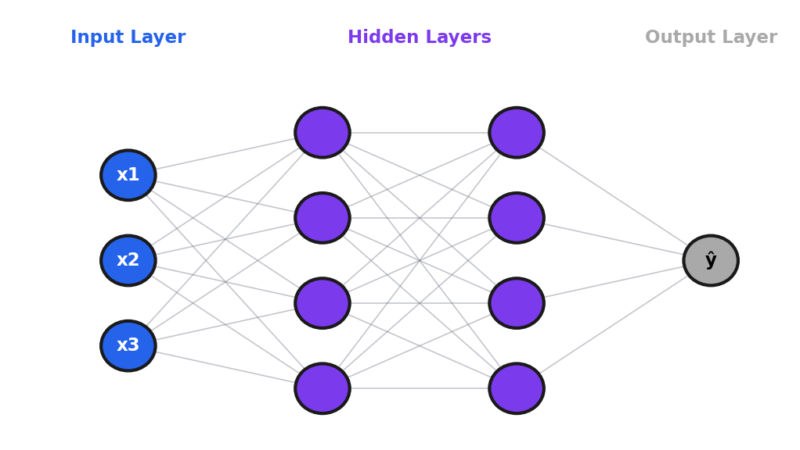

Module 6: Neural Networks Fundamentals¶
Introduction¶
Today we cross a threshold—we're entering deep learning.
Everything we've covered so far—regression, classification, ensemble methods, unsupervised learning—those are "classical" machine learning. Powerful, interpretable, widely used. But deep learning has transformed what's possible with images, text, audio, and complex patterns.
Here's the key insight: neural networks are not magic. They're built on the same principles we've been learning. Remember gradient descent from Module 2? You'll see it again. Remember the bias-variance tradeoff from Module 1? It applies here too.
What makes neural networks special is their ability to learn hierarchical representations—layer by layer, from simple patterns to complex concepts.
Hierarchical learning is automatic: We design the architecture and loss function; the specific representations are discovered, not designed. Through backpropagation, weights organize themselves to extract useful features. Researchers visualizing trained networks find edges in layer 1, textures in layer 2, object parts in later layers—this emerges from optimization as the most efficient solution.
Learning Objectives¶
By the end of this module, you should be able to:
- Explain the historical development and architecture of neural networks
- Describe the components of a neural network (weights, biases, activations)
- Understand backpropagation and gradient-based optimization
- Implement a simple neural network in PyTorch
- Train and evaluate networks on classification tasks
- Apply regularization techniques to prevent overfitting
6.1 Introduction to Neural Networks¶
Three Components: Neural Networks¶
The same framework applies here:
| Component | Neural Network |
|---|---|
| Decision Model | Stacked layers with non-linear activations |
| Quality Measure | Cross-entropy (classification) or MSE (regression) |
| Update Method | Backpropagation + gradient descent (SGD, Adam) |
In Module 2, you implemented gradient descent for two parameters (\(\beta_0\), \(\beta_1\)). Neural networks apply the same idea to millions of parameters. The algorithm is the same; the scale is different.
Historical Context¶
1957: Frank Rosenblatt invents the Perceptron—a single layer of weights that could learn simple patterns. The New York Times predicted thinking machines within a decade.
1969: Minsky and Papert publish "Perceptrons," proving single-layer networks can't learn XOR. Funding dries up. First "AI Winter."
1986: Rumelhart, Hinton, and Williams popularize backpropagation—making deep network training practical.
2012: AlexNet wins ImageNet by a massive margin, demonstrating that deep networks trained on GPUs could dramatically outperform traditional methods.
Today: Transformers, GPT, and large language models.
The lesson: Neural networks have existed for 70 years. What changed is data, compute, and better training techniques.
Why deep learning works now: Three factors combined: (1) Data—ImageNet provided 14M labeled images; the internet generated billions of documents. (2) GPUs—parallel operations for matrix multiplication, turning weeks into hours. (3) Better techniques—ReLU solved vanishing gradients, dropout provided regularization, batch norm stabilized training, Adam made optimization robust. AlexNet (2012) combined all three and won ImageNet decisively.
The XOR Problem¶
The XOR function outputs 1 if exactly one input is 1:
| x₁ | x₂ | XOR |
|---|---|---|
| 0 | 0 | 0 |
| 0 | 1 | 1 |
| 1 | 0 | 1 |
| 1 | 1 | 0 |
A single-layer perceptron can only learn linearly separable patterns. XOR isn't linearly separable—you can't draw a single straight line to separate the 1s from the 0s.
The solution: Add a hidden layer. The hidden layer "transforms" the space to make the problem linearly separable.
How the hidden layer transforms space: Each neuron computes a weighted sum (defining a hyperplane) plus activation (bending space around it). For XOR, one neuron might learn "x₁ + x₂ > 0.5" and another "x₁ + x₂ < 1.5"—together creating a representation where (0,1) and (1,0) map similarly while (0,0) and (1,1) map differently. The output layer can now draw a line in this transformed space.
Multi-Layer Perceptron (MLP) Architecture¶

Terminology: - Input layer: Raw features (not counted in "layers") - Hidden layers: Intermediate representations - Output layer: Final predictions - Depth: Number of hidden layers - Width: Neurons per layer
| Network Type | Hidden Layers | Typical Use |
|---|---|---|
| Shallow | 1-2 | Simple patterns |
| Deep | 3+ | Complex patterns |
| Very Deep | 50+ | State-of-the-art |
Why Depth Matters¶
Each layer learns more abstract features: - Layer 1: Edges, simple patterns - Layer 2: Textures, shapes - Layer 3: Object parts - Layer N: Complete concepts
Deep networks learn hierarchical representations that match how complex patterns are actually structured.
Universal Approximation Theorem¶
A feedforward network with a single hidden layer can approximate any continuous function, given enough neurons.
What it means: With enough neurons, any reasonable function can be approximated.
What it doesn't mean: It doesn't tell you how many neurons you need, how to find the weights, or that one layer is optimal.
In practice, deep networks represent the same functions more efficiently than wide shallow ones.
Why depth over width? A function that a 10-layer network represents with 1,000 neurons might require millions in a single layer. Complex patterns are compositional (faces = eyes + nose + mouth; eyes = curves + colors)—deep networks represent this hierarchy naturally. Shallow networks must learn all combinations directly, which explodes exponentially. Deeper architectures outperform shallow ones with the same parameter count on complex benchmarks.
Network Components¶
1. Weights (W): Learnable parameters connecting neurons 2. Biases (b): Learnable offset per neuron 3. Activation functions: Non-linear transformations
The computation at each neuron:
Activation Functions¶
ReLU (Rectified Linear Unit) — most common:
- Simple: negative → 0, positive → pass through
- Default choice for hidden layers
- Helps with vanishing gradients
Sigmoid:
- Output between 0 and 1
- Good for binary output layer
- Suffers from vanishing gradients in deep networks
Softmax (for multi-class):
- Outputs sum to 1 (probabilities)
- Used in final layer for classification
Why Non-linear Activations?¶
Without non-linearity:
Multiple linear layers = one linear layer!
No matter how many linear layers you stack, the result is still linear. Non-linear activations allow each layer to transform representations in ways linear functions can't.
Why ReLU works: (1) Vanishing gradient solution—sigmoid's gradient approaches zero for large inputs; ReLU has gradient 1 for positives, letting gradients pass through unchanged. (2) Computational efficiency—just max(0,x), orders of magnitude faster than sigmoid. (3) Sparse activation—50% of neurons may be "dead" for any input, improving efficiency. Despite being piecewise linear, stacking many ReLUs can approximate any continuous function.
Parameter Counting¶
For a fully connected layer:
Example: Network with layers [784, 256, 128, 10] - Layer 1: 784×256 + 256 = 200,960 - Layer 2: 256×128 + 128 = 32,896 - Layer 3: 128×10 + 10 = 1,290 - Total: 235,146 parameters
Is 10 million parameters a lot? It depends on your data. If you have 1,000 examples and 10 million parameters, you'll overfit. If you have 10 million examples, it's reasonable. The ratio matters.
Common Misconceptions¶
| Misconception | Reality |
|---|---|
| "Deep learning is different from ML" | Deep learning IS machine learning. Same principles apply. |
| "More layers always better" | Deeper = harder to train, can overfit. Match depth to complexity. |
| "Neural networks are black boxes" | Many interpretability tools exist. The criticism is overstated. |
| "Need millions of data points" | Transfer learning enables NNs with small datasets. |
6.2 Training Neural Networks¶
Loss Functions¶
Regression — Mean Squared Error (MSE):
Binary Classification — Binary Cross-Entropy:
Multi-class — Cross-Entropy:
Why cross-entropy? The log function severely penalizes confident wrong predictions: - \(\log(1) = 0\) — no penalty for correct confidence - \(\log(0.5) \approx -0.69\) — moderate penalty - \(\log(0.01) \approx -4.6\) — severe penalty
Backpropagation¶
The algorithm that makes deep learning possible.
- Forward pass: Compute predictions
- Compute loss: How wrong are we?
- Backward pass: Compute gradients using chain rule
- Update: Adjust weights
The chain rule lets us compute how each weight contributed to error, layer by layer, from output back to input.
Why gradient computation is fast: Backpropagation reuses computations—when computing gradients for layer 5, you reuse gradient info from layers 6-10. Total cost is ~2× the forward pass, O(n) in weights. GPUs parallelize matrix multiplications across thousands of cores. Processing 64 examples in parallel takes almost the same time as 1. A network with 100M parameters takes seconds per batch on modern GPUs.
Key point: PyTorch does this automatically!
One line computes gradients. One line updates weights.
Optimization Algorithms¶
SGD (Stochastic Gradient Descent):
Same as Module 2. Simple but can be slow.
SGD + Momentum:
Accumulates velocity in consistent directions. Like a ball rolling downhill.
Adam (Adaptive Moment Estimation) — most popular: - Combines momentum with adaptive learning rates - Per-parameter learning rates - Usually works well with defaults
How Adam works (simplified): - Track moving average of gradients (momentum) - Track moving average of squared gradients (adapt rates) - Parameters with large gradients get smaller learning rates
optimizer = torch.optim.SGD(model.parameters(), lr=0.01, momentum=0.9)
optimizer = torch.optim.Adam(model.parameters(), lr=0.001)
Practical advice: Start with Adam. Try SGD with momentum if you have time to tune.
Learning Rate¶
The most important hyperparameter.
| Too High | Just Right | Too Low |
|---|---|---|
| Loss explodes | Steady decrease | Very slow |
| Diverges | Converges | Gets stuck |
Tips: - Start with 0.001 for Adam, 0.01 for SGD - If loss explodes: divide by 10 - If loss barely moves: multiply by 3-10 - Use schedulers to reduce rate during training
Batch Size¶
| Variant | Batch Size | Trade-off |
|---|---|---|
| Batch GD | All data | Stable but slow |
| SGD | 1 sample | Fast but noisy |
| Mini-batch | 32-256 | Best of both |
Standard practice: 32, 64, 128, or 256
Trade-offs: - Larger: More stable, more memory, may generalize worse - Smaller: Noisier (regularizing), faster per epoch
Regularization: Dropout¶
Randomly zero neurons during training.
- Forces network to not rely on any single neuron
- Like training an ensemble of sub-networks
- Only active during training, not inference
Connection to ensembles: Dropout trains many different sub-networks (different neurons dropped each time) and averages at test time. It's bagging for neural networks.
How dropout learning works: Each training example sees a different random subset of neurons. Features that depend on one specific neuron won't work consistently (it might be dropped), forcing distributed, robust representations. At test time, ALL neurons are used but scaled by the dropout rate. The ensemble interpretation: training exponentially many sub-networks simultaneously, averaging at test time.
Regularization: Batch Normalization¶
Normalize activations within each mini-batch.
- Stabilizes training
- Allows higher learning rates
- Add after linear layer, before activation
Regularization: Early Stopping¶
Stop when validation loss stops improving.
if val_loss < best_val_loss:
best_val_loss = val_loss
save_model()
else:
patience_counter += 1
if patience_counter >= patience:
stop_training()
Simple and effective.
Diagnosing Overfitting¶
Signs: - Training loss decreasing - Validation loss increasing - Large gap between train/val accuracy
Solutions: - More data - Dropout - Early stopping - Simpler architecture - Data augmentation
Common Misconceptions¶
| Misconception | Reality |
|---|---|
| "Lower training loss is always better" | If validation loss increases, you're overfitting. |
| "Dropout makes the network weaker" | Only during training. At test, all neurons active. |
| "Just use Adam defaults" | Tuning learning rate still helps. |
| "Train until loss is zero" | Zero training loss usually means severe overfitting. |
6.3 PyTorch Overview¶
Why PyTorch?¶
- Dynamic computation graphs (easier debugging)
- Pythonic and intuitive
- Strong research community
- Seamless GPU support
- Great documentation
Tensors and Autograd¶
Tensors: Like NumPy arrays but with GPU support and automatic differentiation.
import torch
# Create tensors
x = torch.randn(3, 4) # Random normal
# Move to GPU
device = torch.device('cuda' if torch.cuda.is_available() else 'cpu')
x = x.to(device)
Autograd: Automatic differentiation
x = torch.tensor([2.0], requires_grad=True)
y = x ** 2
y.backward()
print(x.grad) # dy/dx = 2x = 4 at x=2
Building Models with nn.Module¶
import torch.nn as nn
class MLP(nn.Module):
def __init__(self, input_size, hidden_size, num_classes):
super().__init__()
self.fc1 = nn.Linear(input_size, hidden_size)
self.fc2 = nn.Linear(hidden_size, num_classes)
self.dropout = nn.Dropout(0.2)
def forward(self, x):
x = x.view(-1, input_size) # Flatten
x = torch.relu(self.fc1(x))
x = self.dropout(x)
return self.fc2(x)
Define layers in __init__, define forward pass in forward.
The Training Loop¶
This is the heart of neural network training. Learn this pattern:
model = MLP(784, 256, 10).to(device)
optimizer = optim.Adam(model.parameters(), lr=0.001)
criterion = nn.CrossEntropyLoss()
for epoch in range(num_epochs):
model.train()
for data, target in train_loader:
data, target = data.to(device), target.to(device)
optimizer.zero_grad() # 1. Clear gradients
output = model(data) # 2. Forward pass
loss = criterion(output, target)
loss.backward() # 3. Backward pass
optimizer.step() # 4. Update weights
The pattern:
1. optimizer.zero_grad() — Clear old gradients
2. output = model(data) — Forward pass
3. loss.backward() — Compute gradients
4. optimizer.step() — Update weights
Evaluation Mode¶
model.eval() # Disables dropout
with torch.no_grad(): # No gradient tracking
for data, target in test_loader:
output = model(data)
pred = output.argmax(dim=1)
Key points:
- model.eval() disables dropout (uses all neurons)
- torch.no_grad() saves memory
Always switch to eval mode for validation and testing!
Complete MNIST Example¶
import torch
import torch.nn as nn
import torch.optim as optim
from torch.utils.data import DataLoader
from torchvision import datasets, transforms
# Device
device = torch.device('cuda' if torch.cuda.is_available() else 'cpu')
# Data
transform = transforms.Compose([
transforms.ToTensor(),
transforms.Normalize((0.1307,), (0.3081,))
])
train_data = datasets.MNIST('./data', train=True, download=True, transform=transform)
test_data = datasets.MNIST('./data', train=False, transform=transform)
train_loader = DataLoader(train_data, batch_size=64, shuffle=True)
test_loader = DataLoader(test_data, batch_size=1000)
# Model
class Net(nn.Module):
def __init__(self):
super().__init__()
self.fc1 = nn.Linear(784, 256)
self.fc2 = nn.Linear(256, 128)
self.fc3 = nn.Linear(128, 10)
self.dropout = nn.Dropout(0.2)
def forward(self, x):
x = x.view(-1, 784)
x = torch.relu(self.fc1(x))
x = self.dropout(x)
x = torch.relu(self.fc2(x))
return self.fc3(x)
model = Net().to(device)
optimizer = optim.Adam(model.parameters(), lr=0.001)
criterion = nn.CrossEntropyLoss()
# Training
def train(epoch):
model.train()
for data, target in train_loader:
data, target = data.to(device), target.to(device)
optimizer.zero_grad()
output = model(data)
loss = criterion(output, target)
loss.backward()
optimizer.step()
def test():
model.eval()
correct = 0
with torch.no_grad():
for data, target in test_loader:
data, target = data.to(device), target.to(device)
pred = model(data).argmax(dim=1)
correct += pred.eq(target).sum().item()
return 100. * correct / len(test_loader.dataset)
# Run
for epoch in range(10):
train(epoch)
print(f'Epoch {epoch}: Test Accuracy: {test():.2f}%')
Reflection Questions¶
-
Why couldn't the original perceptron learn XOR? Draw the XOR data and explain.
-
If a neural network can approximate any function with one hidden layer (Universal Approximation), why do we need deep networks?
-
Why do we need non-linear activation functions? What would happen with only linear activations?
-
A model has 10 million parameters. Is that a lot? What determines if this is appropriate?
-
Your training loss is decreasing but validation loss is increasing. What's happening and how do you fix it?
-
Why might Adam work better than vanilla SGD without tuning?
-
How is dropout similar to ensemble methods like Random Forest?
Practice Problems¶
-
Calculate parameters for a [784, 512, 256, 128, 10] network
-
Identify overfitting from training curves (given a plot description)
-
Choose appropriate activation for: (a) hidden layers, (b) binary output, (c) multi-class output
-
Debug: "My training loss keeps increasing." Most likely cause?
-
Write the PyTorch training loop pattern from memory
Chapter Summary¶
Six key takeaways from Module 6:
-
Neural networks = stacked layers + non-linear activations
-
Depth enables learning hierarchical features
-
Backpropagation computes gradients via chain rule
-
Adam is a good default optimizer; learning rate is the key hyperparameter
-
Dropout + early stopping prevent overfitting
-
PyTorch pattern: zero_grad → forward → backward → step
What's Next¶
In Module 7, we tackle Computer Vision & CNNs: - Convolutional layers for images - Pooling and feature maps - Famous architectures (LeNet, VGG, ResNet) - Transfer learning
Same training principles, but specialized for images. Instead of fully connected layers, we'll use convolutional layers that exploit spatial structure.